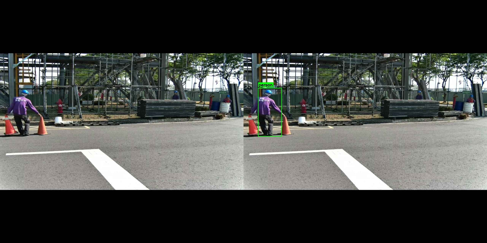
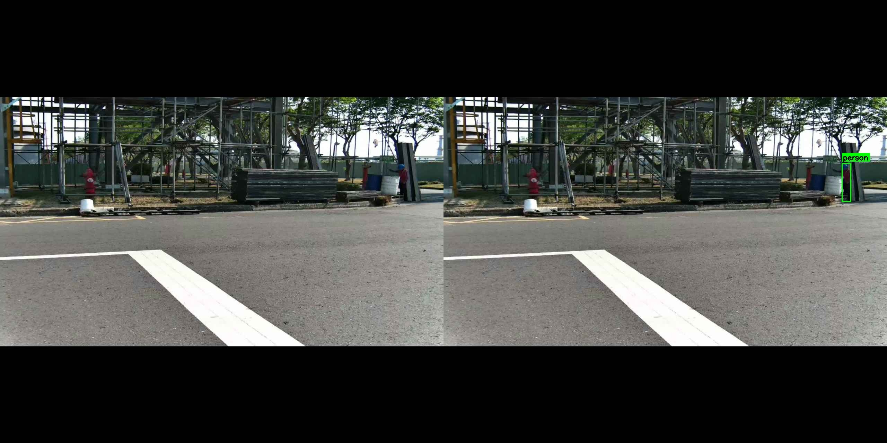

重要結論：經 AI 視覺分析前 10 個案例，未發現任何真實違規案例。所有偵測結果均為系統誤判或因攝影機配置不當而無法判斷。
建議行動：建議全數刪除本批次通報，並檢討偵測系統設定與攝影機配置。
系統無法區分「地面人員」與「高處作業人員」，只要偵測到人員即發出警報。實際上這些人員在地面，根本不需要穿戴安全帶或使用安全掛鉤。
案例：ID 1030288, 1030287, 1030274, 1030269, 1030255
攝影機與鷹架距離約 20-30 公尺，即使有人員在高處作業，畫面解析度也不足以判斷安全掛鉤是否確實掛在施工架上。
案例：ID 1030290, 1030284, 1030278, 1030270, 1030251
| 問題項目 | 說明 |
|---|---|
| 偵測邏輯缺陷 | 系統未設定「高度判斷」，無法區分高處作業與地面作業 |
| 偵測區域設定不當 | 偵測範圍包含地面區域，導致大量誤報 |
| 攝影機配置問題 | 距離過遠，解析度不足以辨識掛鉤細節 |
| 缺乏二次確認機制 | 系統直接通報，沒有信心分數門檻或人工覆核 |

誤判案例 (ID: 1030269)
地面工作人員被誤判為需要安全帶

無法判斷案例 (ID: 1030284)
攝影機距離太遠，無法確認掛鉤狀態
1. 本批次 302 個案例預估有 90% 以上為誤報，建議全數刪除。
2. 系統偵測邏輯與攝影機配置均需改善，否則將持續產生大量無效通報。
3. 建議優先執行「短期改善」方案，預期可降低誤報率至 20% 以下。
4. 若資源允許，建議同步進行「中期改善」，提升偵測準確度至實用水準。